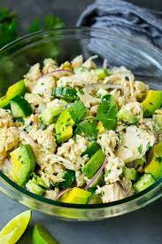

Avocado Tuna Salad

Description
Great tuna avocado salad as a side dish or meal. Serve on toasted bread (gluten-free if needed), on top of greens, or enjoy it all by itself.
Ingredients
- 1 ripe avocado
- 2 (5 ounce) cans flaked light tuna
- ½ red apple, chopped
- ½ cup chopped red onion
- ½ cup chopped celery
- ¼ cup chopped toasted walnuts
In - 2 tablespoons mayonnaise
- 1 tablespoon pickle juice
- 1 teaspoon dried dill weed
- ½ teaspoon Dijon mustard
- ¼ teaspoon ground cumin
Steps
- Cut avocado in half, scoop out the flesh into a large bowl
- mash avocado with the back of a fork or potato masher
- Add tuna, apple, onion, celery, toasted walnuts, mayonnaise, pickle juice, dill, Dijon mustard, cumin, salt, and pepper; mix well